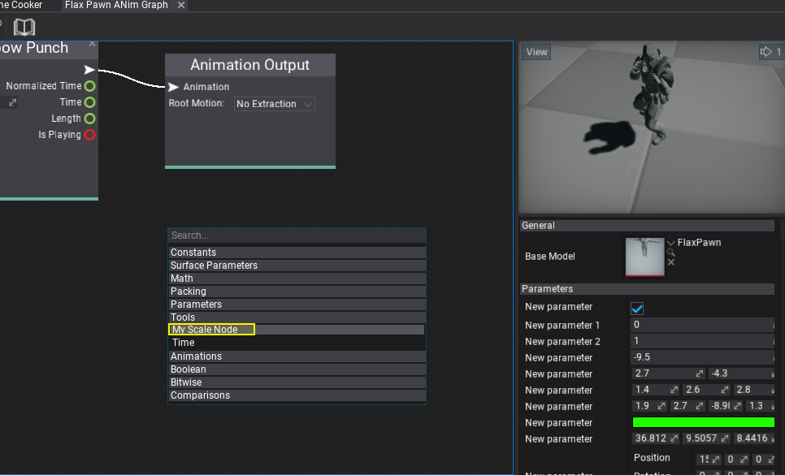
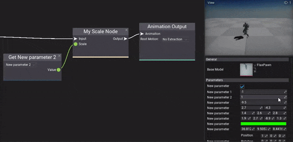

Anim Graph Custom Nodes
Anim Graph supports extending it by defining and using custom nodes. This feature can be used to implement custom IK solver or to perform very specific animation data processing or using custom animation data source such as live-rigging. Follow this documentation page to learn more about how to create and use custom nodes in Anim Graph. Also, plugins can ship with custom nodes to be reused across different projects.
Note
Anim Graph uses low-level optimizations to reduce memory allocations and memory copies. Extending it with custom nodes requires basic knowledge about unmanaged memory pointers usage and skinned model skeleton nodes/bones scheme.
Defining custom node archetype
Every custom node consists of two parts: the surface node descriptor factor and the runtime logic controller.
The first step is to add a new C# script inside the Source/<module_name> directory and use the target class name with Editor postfix. Alternatively, you can use an additional editor-only scripts module as shown in tutorial here.
Here is an example code that defines a simple node which takes animation pose and scale parameter as inputs and outputs modified animation pose.
using FlaxEditor.Surface;
using FlaxEngine;
[AnimationGraph.CustomNodeArchetypeFactory]
public static class MyAnimGraphNodeFactory
{
public static NodeArchetype GetMyNodeArchetype()
{
return new NodeArchetype
{
// Define node title and metadata
Title = "My Scale Node",
Description = "",
Flags = NodeFlags.AnimGraph,
// Define node variables (per instance)
// DefaultValues[0] must specify the C# runtime controller typename
// DefaultValues[1] must specify the node group name
// use other slots to store custom data per-node
DefaultValues = new object[]
{
"MyScaleNode", // Runtime node typename
"Tools", // Group name
1.0f, // Custom value stored per node
// ..here you can store more per-node data
},
// Define node visuals and elements
Size = new Vector2(200, 70),
Elements = new[]
{
NodeElementArchetype.Factory.Input(0, "Input", true, typeof(void), 0),
NodeElementArchetype.Factory.Input(1, "Scale", true, typeof(float), 1, 2),
NodeElementArchetype.Factory.Output(0, "Output", typeof(void), 2),
},
};
}
}
In general, classes in Editor assembly or Editor plugins assemblies marked with AnimationGraph.CustomNodeArchetypeFactory attribute are scanned to find static parameter-less methods that return NodeArchetype type. You can define many node types in the factory.
Note
If your custom node doesn't show in the editor or doesn't work as intended see the engine log file for warning information.
Implementing runtime logic controller
Next step is to implement runtime-part of the node that is being executed in the game (node factory is used only in Editor to define node data and UI). Add the following class MyScaleNode to you game assembly.
using System;
using FlaxEngine;
public class MyScaleNode : AnimationGraph.CustomNode
{
private float _defaultScale;
public override void Load(ref InitData initData)
{
// Here you can access the node value and graph skinned model to setup data
// This method is called once per node initialization on graph load
// (usually from the content loading thread)
// Cache default scale value
_defaultScale = (float)initData.Values[2];
}
public override unsafe object Evaluate(ref Context context)
{
// Here node is getting called to evaluate the output for the given context
// Evaluate the input bones pose
var input = (Impulse*)(IntPtr)GetInputValue(ref context, 0);
// Evaluate the input scale
var scale = HasConnection(ref context, 1) ? (float)GetInputValue(ref context, 1) : _defaultScale;
// Get the output bones pose (cached internally to improve performance)
var output = GetOutputImpulseData(ref context);
// Copy the input and apply the scale to the root node (always the first one)
CopyImpulseData(input, output);
output->Nodes[0].Scale *= scale;
// Return the bone pose for further processing
return new IntPtr(output);
}
}
Using custom node
The last step is to test the created custom node. To do so simply right-click and select you node from the list or type to search by name.

Result:
